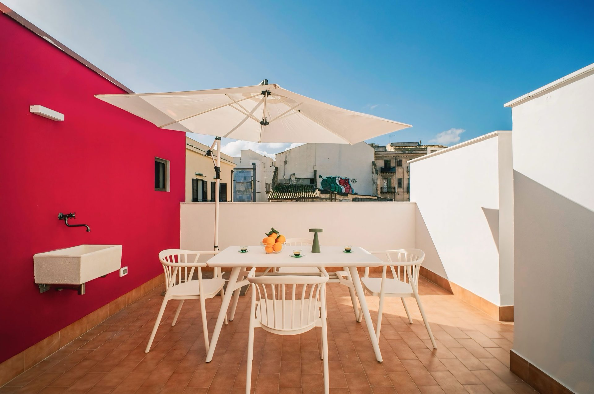

Appartamento con Terrazzo · Palermo, Sicilia
La Struttura
Fior di Sicilia è un appartamento elegante dotato di un esclusivo terrazzo privato, perfetto per chi desidera vivere la Palermo più autentica immerso nella luce e nel profumo del Mediterraneo. La struttura coniuga interni raffinati con uno spazio esterno unico, dove trascorrere colazioni, aperitivi al tramonto e serate sotto le stelle siciliane.
L'appartamento è curato nei minimi dettagli: arredi ricercati, cucina completamente attrezzata e tutti i comfort moderni si fondono con il fascino siciliano. Il terrazzo — il vero punto di forza della struttura — offre un'esperienza di soggiorno fuori dal comune, permettendo di vivere la città dall'alto, immersi nel silenzio e nella bellezza dell'architettura palermitana.
La posizione centrale garantisce facile accesso ai principali monumenti di Palermo, ai mercati storici e ai migliori ristoranti della città. Ideale per coppie e viaggiatori che cercano un soggiorno esclusivo e personalizzato.
Cosa Troverai
Posizione
Recensioni Ospiti
"La terrazza del Fior di Sicilia è il posto più bello dove abbiamo fatto colazione in vita nostra. Vista sui tetti di Palermo, silenzio e lusso a prezzi onesti."· Airbnb
"Appartamento luminoso e curato in ogni dettaglio. La terrazza è un sogno — abbiamo cenato fuori ogni sera. Posizione perfetta per i mercati storici."· Prenotazione diretta
"Prenotando direttamente abbiamo avuto un upgrade e il welcome kit. Cucina moderna e perfettamente attrezzata. Ci torneremo."· Prenotazione diretta
Prenota Direttamente
Prenota Direttamente
Verifica le date disponibili e prenota il tuo appartamento con terrazzo privato a Palermo direttamente sul nostro portale ufficiale.
Verifica disponibilità Chiedi su WhatsAppDomande Frequenti